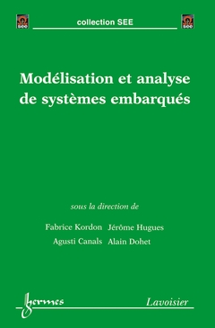
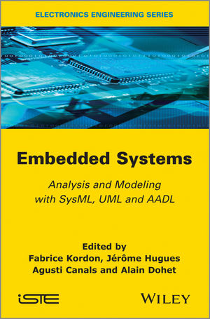
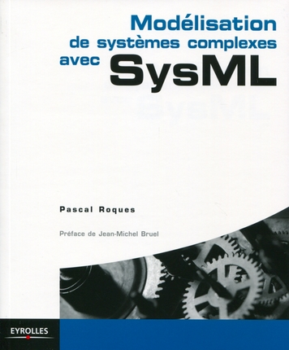

Publications
You can access to the official list from the lab (up to date, but only related to ). You can access to the ResearchGate page. You can also access my Habilitation or my CV.
Here are the last ones:
- Mohamed Naija, Samir Ben Ahmed, Jean-Michel Bruel. New Schedulability Analysis for Real-Time Systems based on MDE and Petri Nets Model at Early Design Stages (regular paper). International Conference on Software and Data Technologies (ICSOFT 2015), Colmar, 20/07/2015-22/07/2015, SciTePress, p. 330-338, août 2015. Avaliable here (Rank B conf.).
- Mohammad Chami, Jean-Michel Bruel. Towards an Integrated Conceptual Design Evaluation of Mechatronic Systems: The SysDICE Approach (regular paper). International Conference on Computational Science (ICCS 2015), Vol. 51, Elsevier, p. 650-659, juillet 2015. Avaliable here (Rank A conf.).
- Jean-Michel Bruel, Benoit Combemale, Ileana Ober, Hélène Raynal. MDE in Practice for Computational Science (regular paper). International Conference on Computational Science (ICCS 2015), Vol. 51, Elsevier, p. 660-669, 2015. Avaliable here (Rank A conf.).
- Jean-Michel Bruel, Nicolas Belloir, Raphaël Faudou. Modélisation des exigences en UML/SysML. Génie Logiciel, GL & IS, Meudon - France, num. 111, p. 12-18, décembre 2014.
Here is a short list of the main ones:
- Manzoor Ahmad, Nicolas Belloir, Jean-Michel Bruel. Modeling and verification of Functional and Non-Functional Requirements of ambient Self-Adaptive Systems. Journal of Systems and Software 107: p. 50-70, 2015 (Rank A journal).
- Gunter Mussbacher, Daniel Amyot, Ruth Breu, Jean-Michel Bruel, Betty Cheng, Philippe Collet, Benoit Combemale, Robert B. France, Rodgart Heldal, James Hill, Jörg Kienzle, Matthias Schöttle, Friedrich Steinman, Dave Stikkolorum, John Whittle. The Relevance of Model-Driven Engineering Thirty Years from Now (regular paper). ACM/IEEE Int. Conf. on Model Driven Engineering Languages and Systems (MODELS 2014), Valencia, 28/09/2014-03/10/2014, Vol. 8767, Springer, septembre 2014.
- Improving scalability and maintenance of software for high-performance scientific computing by combining MDE and frameworks. Marc Palyart, David Lugato, Ileana Ober, Jean-Michel Bruel. ACM/IEEE Int. Conf. on Model Driven Engineering Languages and Systems (MoDELS'2011), Vol. 6981, Jon Whittle, Tony Clark, Thomas Kühne (Eds.), Springer, LNCS, p. 213-227, septembre 2011.
- RELAX : A Language to Address Uncertainty in Self-Adaptive Systems Requirements. Jon Whittle, Pete Sawyer, Nelly Bencomo, Betty H. C. Cheng and Jean-Michel Bruel. Requirements Journal, Springer-Verlag, 2010, Volume 15, Number 2, Pages 177–196. (bibtex)
- Components modeling in UML 2. Jean-Michel Bruel and Ileana Ober. Studia Journal, LI(1) :79–90, June 2006. ISSN : 1224-869x. (bibtex)
- Formalization of the Whole-Part Relationship in the Unified Modeling Language. Franck Barbier, Brian Henderson-Sellers, Annig Le Parc-Lacayrelle, and Jean- Michel Bruel. IEEE Transactions on Sotfware Engineering, 29(5) :459–470, may 2003.
For some indexes and numbers, check those (updated on October 21st, 2014):
- The DBLP Server (10 journals, 43 conference papers referenced with 79 different co-authors)
- The ACM Digital library (78 papers)
- Google Scolar(119 papers, H-index 15, 8 since 2009)
Last book participation (chapters, preface, ...):


